Local Species
The waters of southeastern Massachusetts hold a solid mix of warmwater panfish, bass, pickerel, and the occasional stocked trout. Bag limits and size minimums below reflect current Massachusetts statewide general regulations — some individual waters may have special rules. Always check mass.gov/masswildlife and the current year's freshwater fishing regulations before you head out.
Largemouth Bass
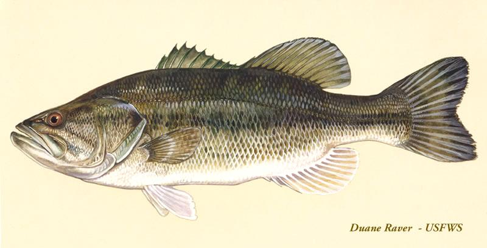
| Common Name | Largemouth Bass |
|---|---|
| Scientific Name | Micropterus salmoides |
| Baits & Lures | Soft plastic worms, topwater plugs, spinnerbaits, jigs |
| Local Waters | Burrage Pond, Cleveland Pond, East Monponsett Pond, Furnace Pond, Long Pond (Plymouth), Robbins Pond, Sampsons Pond, Silver Lake, Stetson Pond, West Monponsett Pond |
| Best Season | Late spring through fall (May–October); peak in June–July |
| Typical Local Size | 10–16 inches; occasional fish over 18 inches in larger, older waters |
| Bag/Size Limit | 5 fish per day, 12-inch minimum length — verify current regs |
Fishing Tips: Largemouth love warm, weedy water — cast soft plastic worms or topwater lures along the edges of lily pads and weed lines, especially in the early morning. During hot summer afternoons, fish slow down and move toward deeper water or shade; slow down your retrieve to match. A 12-inch minimum means you need to measure before keeping — most beginners find a tape measure on their tackle box handy. Catch-and-release is always an option and keeps the fishery strong.
Smallmouth Bass
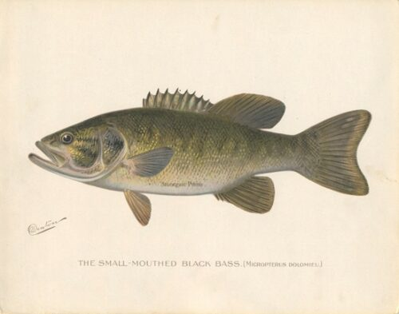
| Common Name | Smallmouth Bass |
|---|---|
| Scientific Name | Micropterus dolomieu |
| Baits & Lures | Tube jigs, crayfish imitations, small spinners, drop-shot rigs |
| Local Waters | Long Pond (Plymouth), Silver Lake |
| Best Season | Spring (pre-spawn) and fall as water cools; less productive in warm summer months |
| Typical Local Size | 10–14 inches; larger fish possible in Silver Lake and Long Pond |
| Bag/Size Limit | 5 fish per day, 12-inch minimum length (same as largemouth) — verify current regs |
Fishing Tips: Smallmouth prefer cleaner, deeper water than largemouth — look for rocky points, gravel bottom, and drop-offs rather than weeds. They're most aggressive in spring and fall when the water is cool. Tube jigs and crayfish imitations fished near the bottom are classic approaches. If you're getting hits from largemouth on soft plastics and want to target smallmouth specifically, move away from vegetation and toward firmer structure.
Chain Pickerel
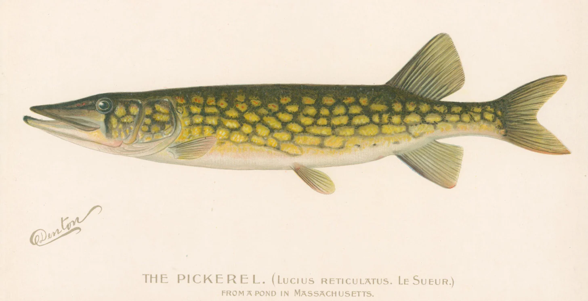
| Common Name | Chain Pickerel |
|---|---|
| Scientific Name | Esox niger |
| Baits & Lures | Spinnerbaits, swimbaits, inline spinners, live baitfish |
| Local Waters | Burrage Pond, Cleveland Pond, East Monponsett Pond, Furnace Pond, Robbins Pond, Sampsons Pond, Silver Lake, Stetson Pond, West Monponsett Pond |
| Best Season | Year-round; especially aggressive in early spring and late fall |
| Typical Local Size | 12–20 inches; occasional fish to 24 inches or larger |
| Bag/Size Limit | 5 fish per day, no minimum size — verify current regs |
Fishing Tips: Pickerel are ambush hunters — cast spinnerbaits or swimbaits along weed edges and retrieve steadily. They hit hard and fast. Because their teeth are sharp enough to cut standard monofilament, add a short wire leader (6–12 inches) or use heavy fluorocarbon (20–30 lb) ahead of your lure to avoid losing fish and lures to cutoffs. Weedless rigged soft plastics work well in thick vegetation. Small pickerel are common and will attack lures nearly as long as they are — fun fishing for beginners.
Yellow Perch
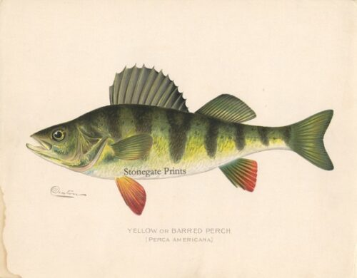
| Common Name | Yellow Perch |
|---|---|
| Scientific Name | Perca flavescens |
| Baits & Lures | Nightcrawlers, small jigs, inline spinners, small minnows |
| Local Waters | Burrage Pond, Cleveland Pond, East Monponsett Pond, Furnace Pond, Long Pond (Plymouth), Robbins Pond, Sampsons Pond, Silver Lake, Stetson Pond, West Monponsett Pond |
| Best Season | Spring spawning run (March–April) and fall; active year-round including winter |
| Typical Local Size | 6–9 inches; occasional fish to 11 inches |
| Bag/Size Limit | 25 fish per day, no minimum size — verify current regs |
Fishing Tips: Yellow perch school tightly — if you catch one, stay put and keep fishing the same spot. A small jig or nightcrawler on a plain hook fished at 4–8 feet is usually all you need. If bites slow down, try a slightly different depth; the school may have moved. Perch are great table fare and one of the best species for beginners and kids — they bite willingly and don't require specialized tackle.
White Perch
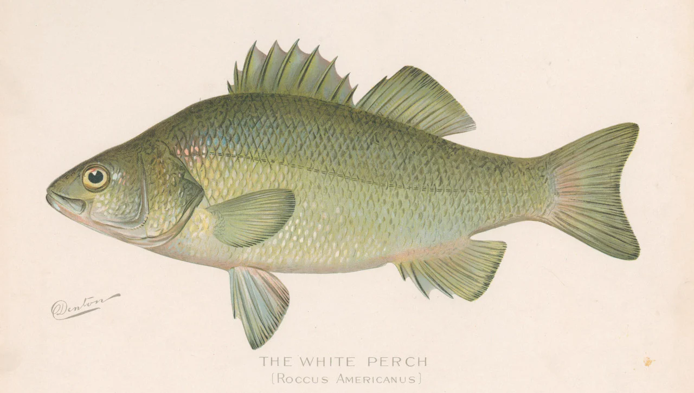
| Common Name | White Perch |
|---|---|
| Scientific Name | Morone americana |
| Baits & Lures | Small spinners, nightcrawlers, small jigs, shiner minnows |
| Local Waters | Burrage Pond, East Monponsett Pond, Furnace Pond, Long Pond (Plymouth), Robbins Pond, Sampsons Pond, Silver Lake, Stetson Pond, West Monponsett Pond |
| Best Season | Spring spawning run (April–May) and fall; consistent through summer |
| Typical Local Size | 7–10 inches; larger fish in Silver Lake and Long Pond |
| Bag/Size Limit | 25 fish per day, no minimum size — verify current regs |
Fishing Tips: White perch are often caught alongside yellow perch using the same small jigs and worms. They tend to run a bit larger and school higher in the water column, so try retrieving your jig at mid-depth rather than near the bottom. Spring is the peak season — fish stack up in shallow areas and bite readily on small spinners. They're considered excellent eating: firm, mild white flesh that pan-fries well.
Black Crappie
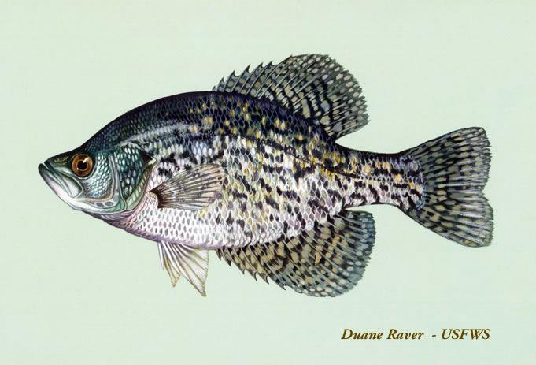
| Common Name | Black Crappie |
|---|---|
| Scientific Name | Pomoxis nigromaculatus |
| Baits & Lures | Small jigs (1/32–1/16 oz), live minnows, small spinners |
| Local Waters | Burrage Pond, Cleveland Pond, East Monponsett Pond, Furnace Pond, Robbins Pond, West Monponsett Pond |
| Best Season | Spring spawning period (May–June) and early summer |
| Typical Local Size | 7–10 inches |
| Bag/Size Limit | No statewide bag or size limit — verify current regs |
Fishing Tips: Crappie suspend in the water column rather than holding near the bottom — if you're not getting bites, try adjusting your depth a foot or two at a time until you find the school. A small jig (1/32 to 1/16 oz) under a slip-float is the classic approach. Live minnows work well too. Once you find them, they bite readily. Like white perch, crappie are considered excellent table fare.
Bluegill
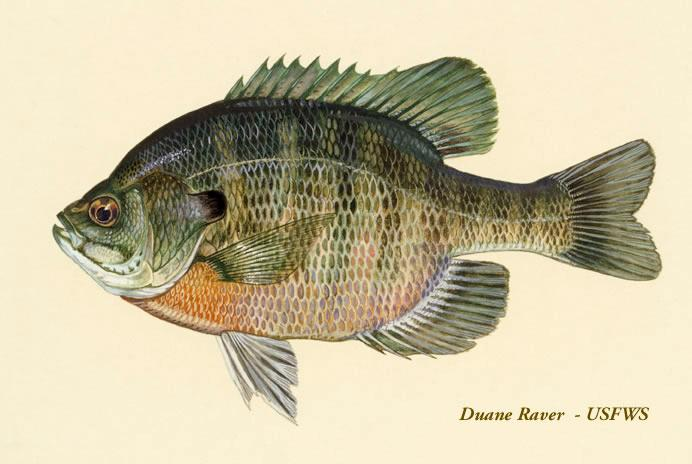
| Common Name | Bluegill |
|---|---|
| Scientific Name | Lepomis macrochirus |
| Baits & Lures | Nightcrawlers, wax worms, crickets, small jigs |
| Local Waters | Burrage Pond, Cleveland Pond, East Monponsett Pond, Furnace Pond, Robbins Pond, Sampsons Pond, Stetson Pond, West Monponsett Pond |
| Best Season | Late spring through summer; most visible during spawning (May–July) |
| Typical Local Size | 5–8 inches; occasional fish to 10 inches |
| Bag/Size Limit | No statewide bag or size limit — verify current regs |
Fishing Tips: A small piece of nightcrawler under a bobber in 3–5 feet of water is the classic bluegill setup and still one of the most effective. Small jigs and wax worms also work well. During the spawn (May–July), males guard shallow circular nests you can often see in clear water — they'll strike almost anything that comes near. To tell bluegill from pumpkinseed: bluegill have a solid dark ear flap and faint vertical bars on the sides; pumpkinseed have a bright orange-tipped ear flap and vivid cheek markings.
Pumpkinseed
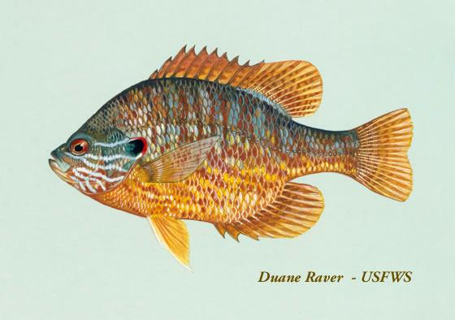
| Common Name | Pumpkinseed |
|---|---|
| Scientific Name | Lepomis gibbosus |
| Baits & Lures | Nightcrawlers, wax worms, crickets, small jigs |
| Local Waters | Burrage Pond, Cleveland Pond, East Monponsett Pond, Furnace Pond, Robbins Pond, Sampsons Pond, Stetson Pond, West Monponsett Pond |
| Best Season | Late spring through summer; most visible during spawning (May–July) |
| Typical Local Size | 4–7 inches; occasional fish to 9 inches |
| Bag/Size Limit | No statewide bag or size limit — verify current regs |
Fishing Tips: Fish for pumpkinseed the same way you'd fish for bluegill — small worm or wax worm on a size 8–10 hook under a bobber in shallow water. They share the same habitat and are often caught together. Pumpkinseed tend to run slightly smaller but are pound-for-pound scrappy fighters. They're easy to identify: look for vivid orange-and-blue cheek streaks and an orange-tipped ear flap. One of the more visually striking fish you'll pull out of a New England pond.
Brown Bullhead
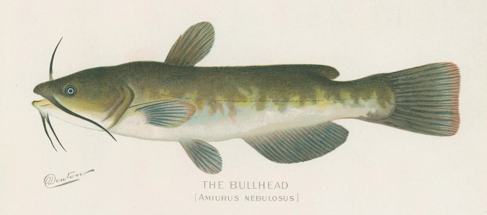
| Common Name | Brown Bullhead |
|---|---|
| Scientific Name | Ameiurus nebulosus |
| Baits & Lures | Nightcrawlers, chicken liver, cut bait |
| Local Waters | Burrage Pond, Cleveland Pond, East Monponsett Pond, Furnace Pond, Long Pond (Plymouth), Robbins Pond, Sampsons Pond, Silver Lake, Stetson Pond, West Monponsett Pond |
| Best Season | Late spring and summer; most active after dark |
| Typical Local Size | 9–13 inches |
| Bag/Size Limit | No statewide bag or size limit — verify current regs |
Fishing Tips: Bullhead feed almost entirely by smell, so use smelly bait — nightcrawlers, chicken liver, or cut bait — fished right on the bottom. A simple slip-sinker rig works well: let the line run through the weight so the fish can pick up the bait without feeling resistance. Most bites come after dark; a glow-in-the-dark bobber or a small clip-on light on your rod tip helps. When handling bullhead, grip them firmly from the top with fingers behind the pectoral spines — those spines are sharp and can puncture skin.
Rainbow Trout
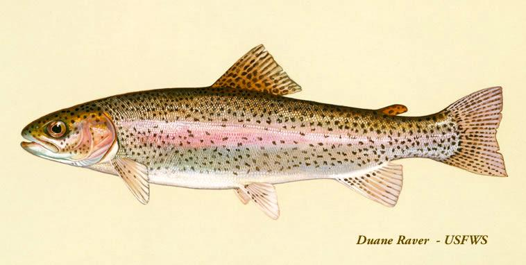
| Common Name | Rainbow Trout |
|---|---|
| Scientific Name | Oncorhynchus mykiss |
| Baits & Lures | PowerBait, nightcrawlers, inline spinners, small spoons |
| Local Waters | Long Pond (Plymouth) |
| Best Season | Spring through early summer (April–June); stocked late March through May by MA DFW |
| Typical Local Size | 10–14 inches (stocked fish); holdover fish can exceed 16 inches |
| Bag/Size Limit | 5 fish per day (combined trout limit), 9-inch minimum — verify current regs |
Fishing Tips: The classic stocked trout setup is Berkley PowerBait (the floating dough bait) on a small treble hook, with a sliding sinker a foot or two up the line — cast it out and let it rest on the bottom while the PowerBait floats up. Spinners and nightcrawlers also work well. Plan your trip for April or May; by late June the water warms past what trout can tolerate. Check the MA DFW stocking report each spring to confirm fish have been put in before making the drive specifically for trout.
Brook Trout
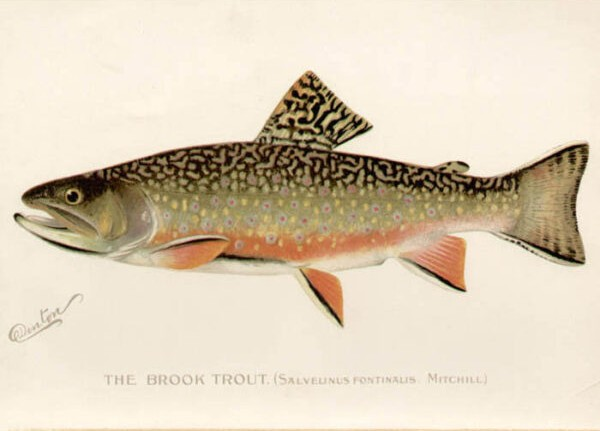
| Common Name | Brook Trout |
|---|---|
| Scientific Name | Salvelinus fontinalis |
| Baits & Lures | Small spinners, nightcrawlers, wet flies, small spoons |
| Local Waters | Long Pond (Plymouth) |
| Best Season | Spring through early summer (April–June); same stocking window as rainbow trout |
| Typical Local Size | 8–12 inches (stocked fish) |
| Bag/Size Limit | 5 fish per day (combined trout limit), 6-inch minimum — verify current regs |
Fishing Tips: Brook trout are stocked alongside rainbows in early spring and respond to the same techniques — small spinners, nightcrawlers, and worms all work. They're even more sensitive to warm water than rainbows, so focus your effort in April and early May. If you catch one and aren't sure what you have, look for the distinctive worm-like markings on the back, orange spots with blue halos on the sides, and orange-tipped fins with a white leading edge. Hard to mistake once you've seen one.
You Might Also Encounter
These species are present in our local waters but are rarely targeted. Most are caught incidentally when fishing for something else.
American Eel — Anguilla rostrata
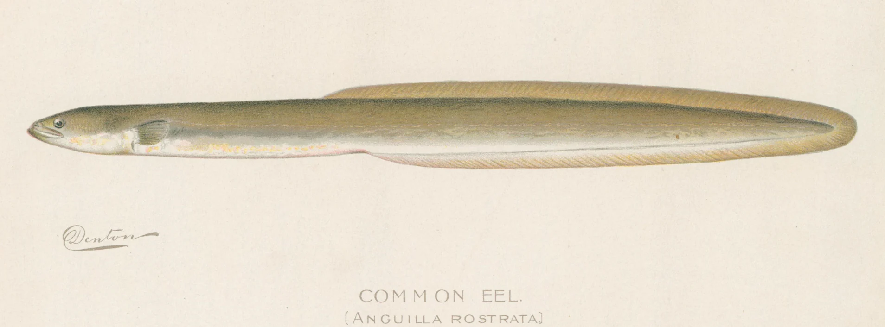
| Local Waters | East Monponsett Pond, Furnace Pond, Long Pond (Plymouth), Robbins Pond, Sampsons Pond, Silver Lake, Stetson Pond, West Monponsett Pond |
|---|
Fishing Tips: Eels are almost always caught by accident — usually on a nightcrawler fished on the bottom for bullhead or perch after dark. If you hook one, expect it to wrap around the line and twist. A damp cloth or glove helps you get a grip on the slippery body. Unhook carefully and release promptly. American eels are a species of conservation concern across their range, so handle them gently. Check current Massachusetts regulations for bag and size limits before keeping any.
White Sucker — Catostomus commersonii
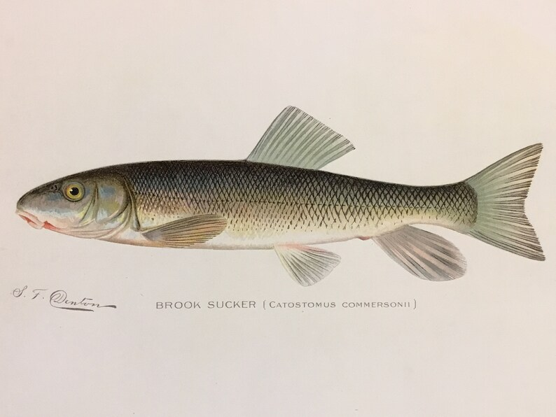
| Local Waters | Long Pond (Plymouth) |
|---|
Fishing Tips: White suckers are almost exclusively caught by accident on small hooks and worms fished near the bottom. They have a downward-pointing mouth designed for feeding on the substrate — they're not chasing lures. If you catch one, you'll notice the distinctive underslung mouth. No statewide bag or size limit in Massachusetts, but they're rarely kept. In early spring, suckers run up small tributary streams to spawn in large, visible groups — worth watching if you happen to walk past a stream inlet.